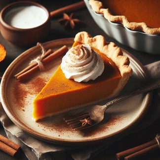

Pumpkin Pie
Ingredients:
- 750 grams - Butternut Squash (or pumpkin, peeled, deseeded and cut into chunks)
- 350 grams - Sweet Shortcrust Pastry
- Plain Flour (for dusting)
- 140 grams - Caster Sugar
- 1/2 teaspoon - Salt
- 1/2 teaspoon - Fresh Nutmeg (grated)
- 1 teaspoon - Cinnamon
- 2 - Eggs (beaten)
- 25 grams - Butter (melted)
- 175 milliliters - Milk
- 1 tablespoon - Icing Sugar
Instructions:
- Preheat the oven to 180°C.
- Roll out the pastry on a lightly floured surface and use it to line a 22cm loose-bottomed tart tin. Chill for 15 minutes.
- Line the pastry with baking paper and fill with baking beans. Bake for 15 minutes, then remove the paper and beans and bake for another 10 minutes until the pastry is golden. Remove from the oven and reduce the temperature to 150°C.
- Meanwhile, place the squash in a large saucepan, cover with water and bring to the boil. Cover with a lid and simmer for 15 minutes or until tender. Drain the squash and let it cool.
- Once cooled, mash the squash with a fork or blend it in a food processor until smooth.
- In a separate bowl, mix together the sugar, salt, nutmeg, cinnamon, eggs, melted butter and milk until well combined.
- Add the mashed squash to the mixture and stir until well combined.
- Pour the mixture into the pastry case and bake for 45 minutes or until set.
- Remove from the oven and let it cool completely before dusting with icing sugar.
Enjoy your homemade pumpkin pie!